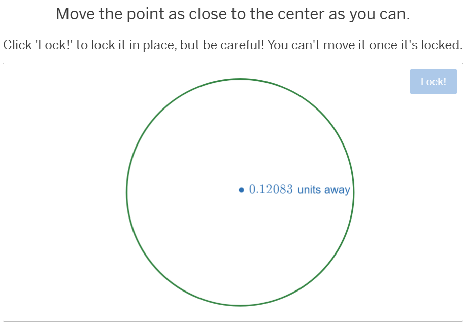
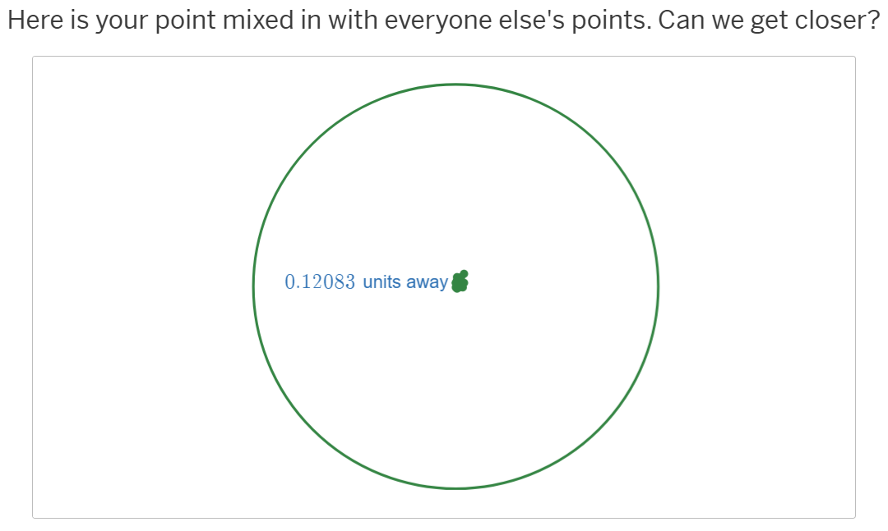

Desmos Classroom (note: As of Summer, 2025, Desmos Classroom is now Amplify Classroom) is often used only as a means for 'spying' on students to ensure they are on task in the digital environment. The power of Amplify Classroom, however, is in the ability to 'crowdsource' mathematical concepts. Crowdsourcing means that students are asked to do a simple low-entry task premised in a mathematical concept. Each student's contribution is aggregated and made available to the entire class.
A recent example I created involved a geometry lesson where students learned how constructing the perpendicular bisectors of two chords could be used to find the center of the circle. The first stage of the activity presented a circle and asked students to place a point as close as possible to the center of the circle. Here's a screenshot of one student's work who managed to get their point only 0.12083 units away from the center:
Each student's points are aggregated with all students' points so they can see how close they are as a group. More importantly, though, the lack of precision motivates the need for more accurate mathematical methods, so a lesson about how perpendicular bisectors of two chords can be used to find the exact center of the circle.
The table below has several crowdsourcing activities, and links that teachers may use to copy and share activities for their own use.
| Activity | Topic |
|---|---|
| Centering a Circle | Geometry |
| Crowdsourcing Conics | Analytical Geometry |
| Open Top Box Volume Modeling | Polynomial Optimization |